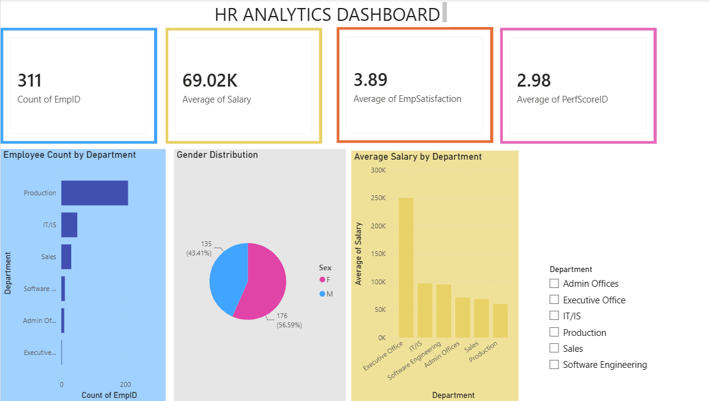
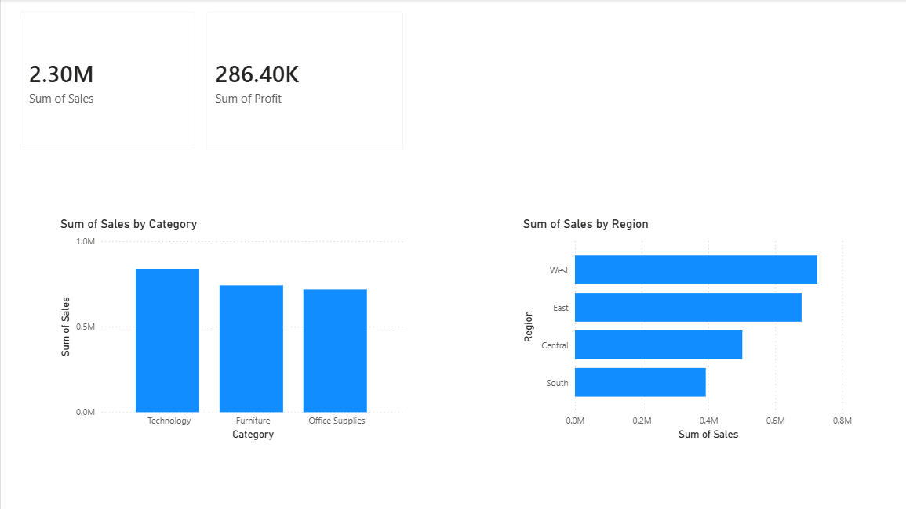

About Me
Aspiring Data Analyst with hands-on experience in SQL, Python, Excel, Power BI and MySQL. Passionate about transforming raw data into meaningful insights using dashboards, reports and business intelligence solutions. Strong knowledge of data cleaning, exploratory data analysis (EDA), KPI reporting and visualization.
Education
B.Tech in Electronics & Communication Engineering
Raghu Institute of Technology, Visakhapatnam
2023 – 2026
Percentage : 77%
Diploma in Electronics & Communication Engineering
International School of Technology and Science for Women's Engineering College
2019 – 2022
Percentage : 75%
SSC
Little Star High School, Kukunoor
2018 – 2019
Percentage : 85%
Skills
- SQL
- Python
- Power BI
- Excel
- MySQL
- Power Query
- DAX
- Git
- GitHub
- Data Cleaning
- Data Analysis
- EDA
- Dashboard Development
- KPI Reporting
Projects
HR Analytics Dashboard
Developed an interactive HR Analytics Dashboard using Power BI. Analyzed employee attrition, job satisfaction, department-wise distribution, and salary trends. Designed KPI cards, charts, and slicers to support data-driven HR decision-making.

Sales Analysis Dashboard
Performed end-to-end sales data analysis using Excel, SQL, and Power BI. Cleaned and transformed datasets, created interactive dashboards, and generated insights into revenue, sales performance, and regional trends.

E-Commerce Sales Analytics Dashboard
Developed an end-to-end E-Commerce Sales Analytics Dashboard using SQL, MySQL, Excel, and Power BI. Cleaned and transformed a 10,000+ row sales dataset, wrote SQL queries for business analysis, and created interactive dashboards featuring KPI cards, sales trends, customer segmentation, maps, and slicers.

Internship
Data Analytics Intern
Codec Technologies Pvt. Ltd. (2 Months)
Worked on real-world datasets using SQL, Python, Excel, and Power BI. Learned data cleaning, preprocessing, exploratory data analysis (EDA), dashboard development, and business intelligence reporting.
Certifications
- Python (Basic) - HackerRank
- SQL - Skillrack
- Data Analytics Job Simulation - Deloitte (Forage)